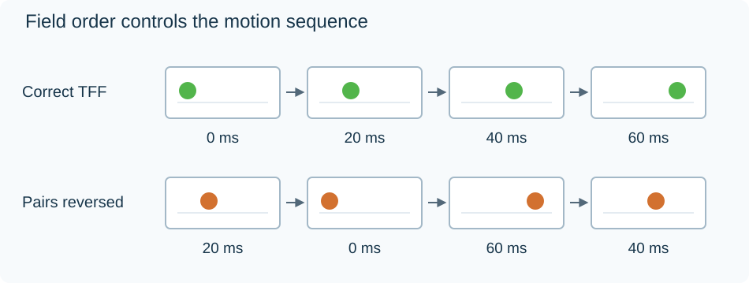

Video Field Order
An interlaced pan can look as if it moves backward briefly, then jumps forward. One possible cause is reversed field order: the player has presented the two fields in each pair in the wrong temporal sequence.
Top field first (TFF) means the top line set was captured before the bottom line set. Bottom field first (BFF) means the opposite. “Top” and “bottom” identify alternating rows across the whole picture, rather than its upper and lower halves.
Follow one moving object
Take a native 50-field/s, top-first sequence. An object moves 10 horizontal positions between each 20 ms capture:
| Field | Capture time | Object position |
|---|---|---|
| Top 0 | 0 ms | 0 |
| Bottom 0 | 20 ms | 10 |
| Top 1 | 40 ms | 20 |
| Bottom 1 | 60 ms | 30 |
The correct reconstructed order is 0 → 10 → 20 → 30. Each movement is +10.
If each pair is interpreted bottom-first, the order becomes 10 → 0 → 30 → 20. Its displacements are −10, +30, −10: backward, a larger forward jump, then backward again.

Original schematic of this timing reversal. It illustrates steady movement, not the output of a named deinterlacer.
A still picture cannot expose this temporal reversal clearly. A slow pan, moving text, or a steadily traveling object is more informative. In an Emby recording, comparing the two parity interpretations on that moving passage can identify the mismatch.
Correct the description or the arrangement
A wrongly tagged TFF sequence can have correct samples and incorrect metadata. Correcting the description lets processing use the existing top-before-bottom capture order.
A genuine field-order conversion changes the relationship between the line sets and their temporal arrangement. It must preserve which rows represent which capture moment, rather than simply renaming the stream. Processing filters may shift or reconstruct line positions to produce the requested arrangement.
The relevant boundary is the input to field reconstruction. It needs the earlier field's actual time and parity to build a forward-moving output sequence. For film-cadence recovery, that information instead guides the selection of fields belonging to the same source film picture.